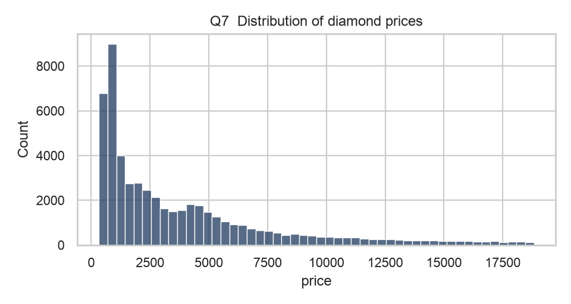
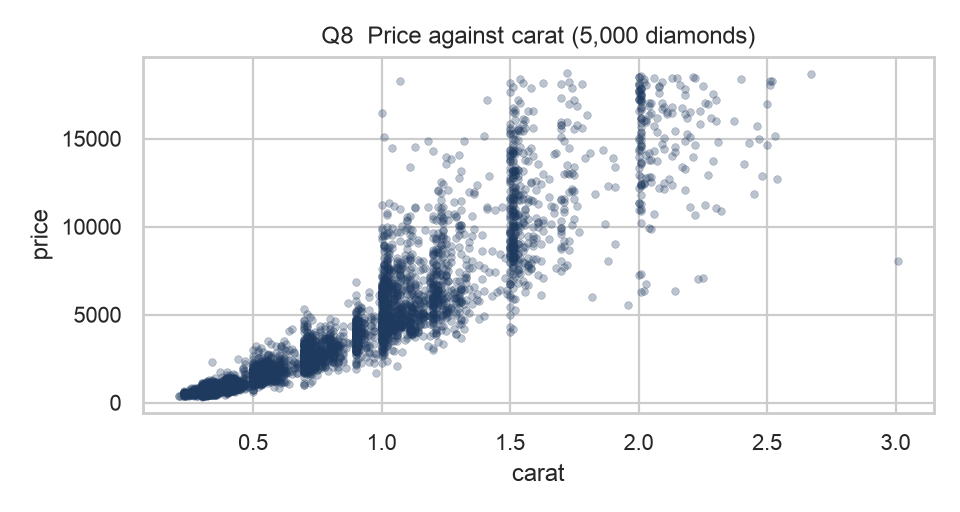
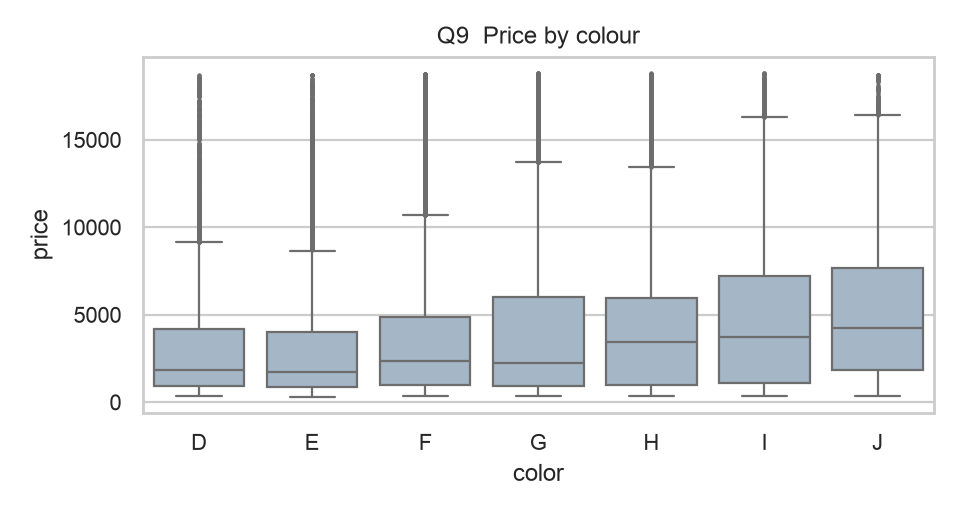
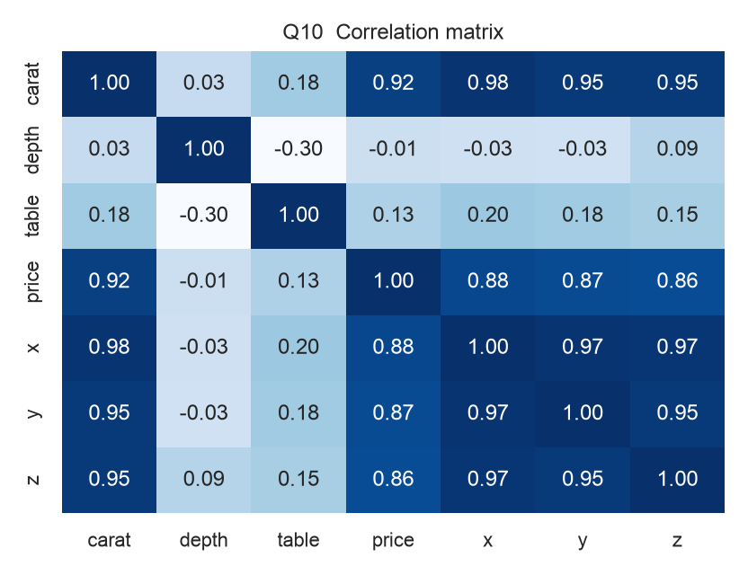

Answer key: EDA on the diamonds dataset
Exam Proctor faculty pilot · Monday 5 October 2026 · Part B, 11:38 to 12:15 · Old IQAC · 40 marks
diamonds dataset (seaborn 0.13.2, pandas 3.0.6).import pandas as pd
import seaborn as sns
import matplotlib.pyplot as plt
df = sns.load_dataset('diamonds') # 53,940 diamonds, built into seaborn
df.head()
Load the diamonds dataset and report the number of rows and columns.
df.shape
Show the data type of every column. Which columns are categorical?
df.dtypes
cut, color, clarity. Numeric: carat, depth, table, x, y, z (float) and price (integer).How many missing values are there in the whole dataset? How many rows are exact duplicates?
print('Missing values:', df.isna().sum().sum())
print('Duplicate rows:', df.duplicated().sum())For price and carat, report the mean, median, minimum and maximum. Is price right-skewed? Justify using the mean and the median.
df[['price', 'carat']].agg(['mean', 'median', 'min', 'max']).round(2)
How many diamonds are there of each cut? Which cut is the most common, and what percentage of all diamonds is it?
counts = df['cut'].value_counts()
print(counts)
print('Share of the most common cut:', round(100 * counts.iloc[0] / len(df), 1), '%')Compute the mean price for each cut, sorted from highest to lowest. The best cut (Ideal) has the lowest mean price. Compute the mean carat for each cut and use it to explain why.
print(df.groupby('cut', observed=True)['price'].mean().sort_values(ascending=False).round(0))
print(df.groupby('cut', observed=True)['carat'].mean().round(2))Plot a histogram of price. Describe its shape in one sentence.
sns.histplot(data=df, x='price', bins=50)
plt.title('Distribution of diamond prices')
plt.show()
Draw a scatter plot of carat (x) against price (y). Use transparency or a random sample of 5,000 rows so the points are readable. Describe the relationship.
sample = df.sample(5000, random_state=1)
sns.scatterplot(data=sample, x='carat', y='price', alpha=0.3)
plt.title('Price against carat (5,000 diamonds)')
plt.show()
Draw a box plot of price for each color. Which colour has the highest median price? (D is the best colour and J the worst.)
sns.boxplot(data=df, x='color', y='price')
plt.title('Price by colour')
plt.show()
print(df.groupby('color', observed=True)['price'].median().sort_values(ascending=False))
Compute the correlation matrix of the numeric columns. Which variable is most strongly correlated with price, and what is the correlation? (Optional: show it as a heatmap.)
corr = df.select_dtypes('number').corr()
print(corr['price'].sort_values(ascending=False).round(3))
sns.heatmap(corr, annot=True, fmt='.2f', cmap='Blues')
plt.show()